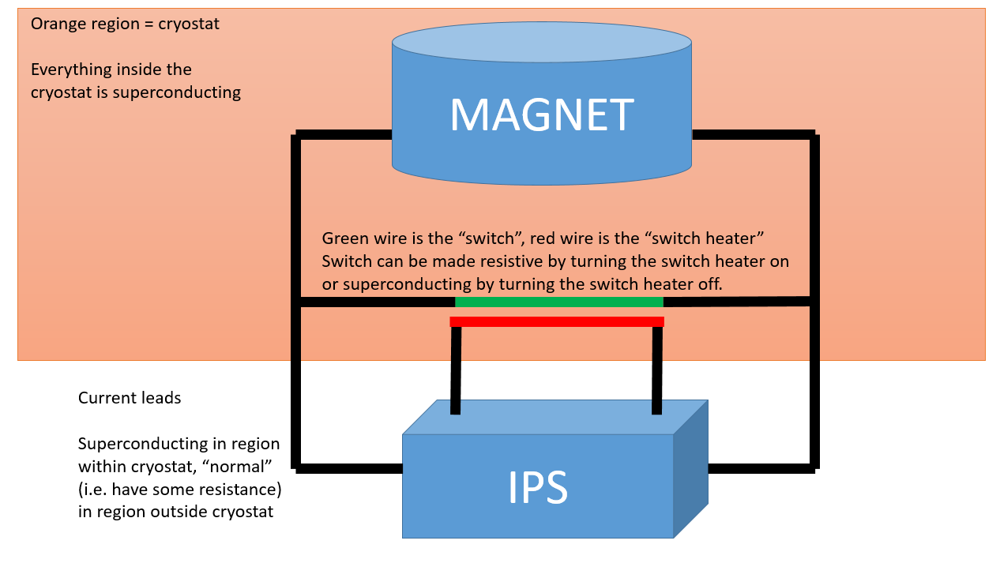

IPS
The Oxford instruments IPS is a cryogenic magnet power supply. This device can cause a magnet to quench if it sends commands while the magnet is in the wrong state! Please be careful when modifying this driver, especially if modifying the state machine. In particular, the two most obvious states which must be avoided are:
PSU current != Magnet current and switch heater on
Ramping the Magnet current too fast
When configuring the IOC, suggested blocks to create are:
Name |
PV |
Description |
|---|---|---|
Field |
|
This is a composite field block that will choose to display either the persistent field or the power supply field, depending on the status of the switch heater |
Magnet_status |
|
This is a status readback from the hardware. Should always be “Normal” (Enum: 0). It is recommended to put run control on this being 0 (set limits -0.5 to 0.5), otherwise it can be difficult for the scientists to see that there is a problem. |
Basic cryomagnet operation
The circuit diagram of a cryogenic magnet with a switch heater looks something like the following:

The basic idea of operation in persistent mode is as follows:
If the switch heater is turned off, the magnet can be set to a particular current/field by the IPS
Once the magnet is set to that current/field, the switch heater can be turned off.
This closes the superconducting switch
Because of how cryomagnets behave, you now get a “persistent” current which flows around the superconducting loop formed by the magnet and the switch.
Persistent currents are an advantage because they allow much greater stability than a power supply
When in persistent mode the IPS can be ramped down and the persistent current within the magnet will keep generating a field.
Now that there is a persistent current flowing around the magnet/switch, the IPS can be ramped down
This has the advantage that it saves power & cryogens
Must set the IPS back to the same current as the magnet before turning the switch heater back on!
GOLDEN RULE OF OPERATING THE IPS: Only turn the switch heater on if PSU current == Magnet current
State machine
The IOC implements the following state machine in SNL:
Initial state
The state that the state machine starts in
The machine can get stuck in this state if the field PV is not processed
At field
This is the state where the magnet is at a particular field (either persistent or not), and is not ramping to anywhere.
The activity of the IPS should be “hold” - this instructs the IPS to maintain it’s current output at the present level.
Set PSU to match magnet
The state machine always sets the IPS to explicitly match the current in the magnet, regardless of whether the current is already matched. This is only technically needed if the magnet was in persistent mode previously, but it doesn’t do any harm to set it explicitly anyway.
The activity of the IPS is “Ramp to Setpoint”
Wait for voltage to stabilize
Once the PSU is at the required current, wait for the voltage to be stable. We define stable as 5 successive readings which are all within a stability voltage of each other. The stability voltage is set as a macro
STABILITY_VOLTAGEwhich defaults to 0.1V.
Turn switch heater on and wait
This state puts the activity back to “Hold”
It also instructs the switch heater to turn on and then waits for the heater to warm up
Set PSU output
At this stage in the state machine, we can begin the ramp to the target field
[PERSISTENT MODE ONLY] Switch off heater
Once the magnet has reached the target field, it is safe to switch off the switch heater again
We wait for the switch to cool back down again (and become superconducting) before moving onto the next state
[PERSISTENT MODE ONLY] Ramp down PSU
The heater is now OFF (the switch is superconducting), so the PSU is free to ramp down without affecting the field produced by the magnet
Set the IPS activity to “Ramp to Zero” and wait for the supplied current to drop to zero
At the end of this state, the magnet is set to “persistent” mode.
The SNL state machine is also described in the following diagram:
---
title: IPS State Machine
---
stateDiagram-v2
direction TB
[*] --> initial
at_field: At Field<br>statemachine_pv=1
set_psu_to_match_magnet: Set PSU to match magnet<br>statemachine_pv=2
wait_for_voltage_to_stabilise: Wait for voltage to stabilise<br>statemachine_pv=3
ensure_switch_heater_warm: Ensure switch heater warm<br>statemachine_pv=4
set_psu_output: Set PSU output<br>statemachine_pv=5
switch_off_heater: Switch off heater<br>statemachine_pv=6
ramp_down_psu: Ramp down PSU<br>statemachine_pv=7
initial --> at_field: field_setpoint_alarm == 0
at_field --> set_psu_to_match_magnet: field_setpoint != field_setpoint_readback<br>&& field_setpoint_alarm == 0<br> && (heater == 0 || heater == 2)
at_field --> set_psu_output: field_setpoint != field_setpoint_readback<br>&& field_setpoint_alarm == 0<br>&& heater == 1
set_psu_to_match_magnet --> wait_for_voltage_to_stabilise: field_setpoint_readback == magnet_field<br>&& psu_field == magnet_field<br>"&& ((sweepmode == SWEEP_MODE)<br> || (sweepmode == SWEEP_MODE_ALT))<br>&& (sweep_active == 0)
set_psu_to_match_magnet --> set_psu_to_match_magnet: timeout 300s
wait_for_voltage_to_stabilise --> ensure_switch_heater_warm: supplyvoltage_stable == 1
wait_for_voltage_to_stabilise --> set_psu_to_match_magnet: field_setpoint_readback != field_setpoint_raw
wait_for_voltage_to_stabilise --> set_psu_to_match_magnet: timeout 300s
ensure_switch_heater_warm --> set_psu_output: activity == ACTIVITY_HOLD<br>&& heater == 1<br> && heater_ontime_ok == 1
ensure_switch_heater_warm --> ensure_switch_heater_warm: timeout heater_wait_time + 30.0s
set_psu_output --> switch_off_heater: field_setpoint_readback == field_setpoint<br>&& (field_setpoint == psu_field<br>&& persistent == 1<br>&& (sweep_active == 0)<br>
set_psu_output --> at_field: field_setpoint_readback == field_setpoint<br>&& field_setpoint == psu_field<br>&& persistent == 0<br>&& (sweep_active == 0)<br>
set_psu_output --> set_psu_output: timeout 300s
switch_off_heater --> ramp_down_psu: heater == 0 || heater == 2<br>
switch_off_heater --> switch_off_heater: timeout 30s
ramp_down_psu --> at_field: psu_field == 0<br>&& (sweep_active == 0) <br>
ramp_down_psu --> ramp_down_psu: timeout 300s
IOC notes
The IOC does not enter it’s state machine until a setpoint is set.
If a ramp was in progress at the time the IOC was started, the ramp will continue, but no further action will occur (for example, the magnet won’t be set to persistent mode and the heater status won’t be changed).
This is done so that there are no assumptions made about the state of the IPS which might be invalid
To continue setting the field to the desired value after an IOC restart, simply resend the setpoint
There are user facing records
FIELD:USERandFIELD:USER:SPwhich should be used for blocks. This field readback will choose whether to display either the persistent field or the power supply field depending on whether the switch heater is on or not. The setpoint is an alias toFIELD:SP.
Settings
There are various IPS units here is a list of the ones we know the settings for (Lab view settings are in ...LabVIEW Modules\Oxford Software\TESLTRON.INI):
Setting |
Description |
IN LabVIEW |
7T Magnet |
9T Chopper Magnet (LET) |
|---|---|---|---|---|
|
5 voltages are compared and they must differ by less than this to be declared stable |
hard coded |
0.1 |
0.1 |
|
Maximum field |
|
7.0 [1] |
8.8 [2] |
|
Maximum rate of change of the field in B/min |
|
0.399 |
0.3990 |
[1] - The limit may be lower on some beamlines due to the construction of their sample area. Below are known cases:
Beamline |
Maximum field |
|---|---|
ZOOM |
5.5T |
MERLIN |
2.0T |
[2] - Limited by hardware. The IPS is configured to reject any setpoints above 8.8T.
Troubleshooting
Magnet won’t go to field which has been set - “Activity” is “Clamped”
Check on the “Advanced” tab of the OPI whether the IPS reports it’s status as “clamped”. If so, the state machine will be unable to proceed because being “clamped” means that the IPS will stay at it’s current output indefinitely. “Clamped” mode is usually used by cryogenics when setting up the magnet, it is potentially undesirable to do this remotely without checking with them first.
Note: You may be able to get out of a clamped state remotely with caput %MYPVPREFIX%IPS_01:ACTIVITY:SP Hold, but the old LabVIEW driver did not do this and it is not exposed as a user-facing option in the EPICS driver. You should double check that this is ok with cryogenics before executing this command! It is potentially dangerous if the magnet has not been fully set up.
Magnet won’t go to field - sweep rate readback is zero
Set the magnet to a non-zero sweep rate (you will need to be in manager mode to do this). Maximum permissible sweep rates are listed in the table above. If unsure, consult the instrument scientists or cryogenics. The IPS itself should limit the sweep rate to safe values in hardware.
Magnet won’t respond to any setpoints
Check remote mode is enabled.
Magnet system status reports something other than “normal” - e.g. “quenched” or “fault”
This indicates a hardware fault. Inform instrument scientists that the magnet has a problem and has likely gone to zero field (even if the IPS still claims to be producing a non-zero field). Consult cryogenics for help.